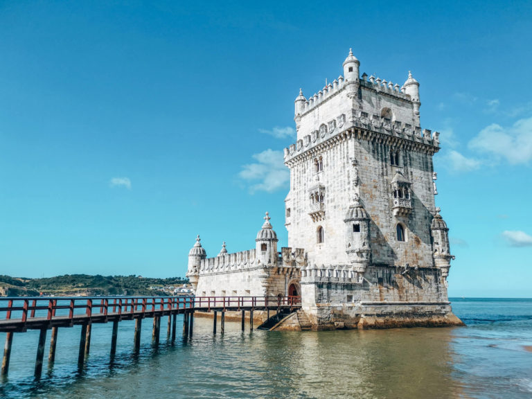

Zabytki Lizbony
Najciekawsze miejsca w Lizbonie
- Klasztor Hieronimtów
- Wieża Belem
- Katedra Se
- Narodowe Muzeum Azulejos
- Kościół św. Rocha
- Lizbońskie oceanarium
- Punk widokowy Portas do Sol
- Winda Santa Justa
Wieża Belem
Militarna budowla z 1520 roku stojąca w Lizbonie, na jej zachodnim przedmieściu Belém, nieopodal Klasztoru Hieronimitów, u ujścia Tagu do oceanu. Jedna z największych atrakcji turystycznych stolicy Portugalii.Budowla mierzy 35 m wysokości. Jej najniższe piętra znajdują się pod powierzchnią wody. Środkowe kondygnacje ozdobione są wieloma balkonami z małymi zdobionymi kolumnami. Torre de Belém składa się z dwóch części: z bastionu oraz z 5-częściowej wieży w jego północnej części. Bastion ma kształt sześciokąta. Posiada nisko sklepioną kaplicę ze strzelnicami dla 17 armat. Jest pierwszym budynkiem, którym posiadał dwupoziomowy skład broni.
